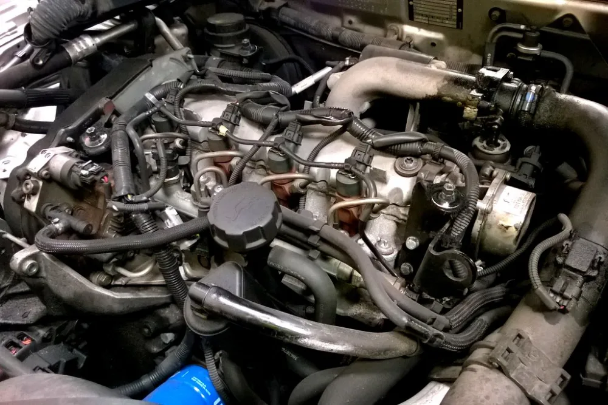
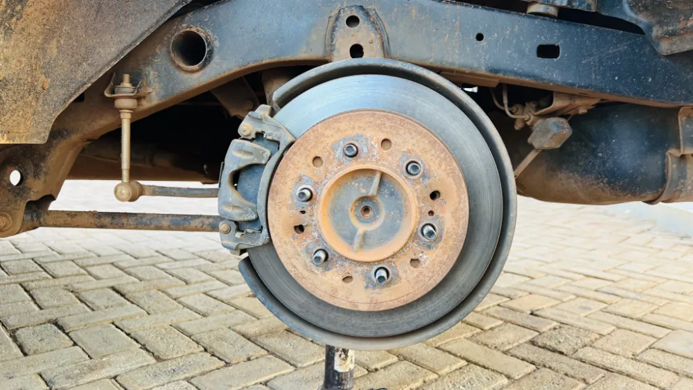

Automobile
Entretenir et réparer · 8 guides vérifiés, pas à pas.

Changer l'huile moteur
Une vidange régulière protège votre moteur. Voici comment la faire vous-même, proprement et en sécurité.

Changer les plaquettes de frein
Bruit métallique au freinage ? Il est temps de changer vos plaquettes. Toujours par paire, sur un même essieu.
Voiture qui ne démarre plus : diagnostic
Batterie, démarreur ou alimentation ? Une méthode simple pour trouver la cause avant d'appeler un dépanneur.
Changer une ampoule de phare
Un phare grillé, c'est une amende et un danger. Dans la plupart des voitures, ça se change en quelques minutes, sans outil.
Remplacer les balais d'essuie-glace
Traces, sauts, bruit : des balais usés gênent la visibilité. Les changer prend dix minutes.
Changer une roue crevée
Le geste que tout conducteur devrait savoir faire, au bord de la route comme au garage.
Changer la batterie d'une voiture
Batterie trop vieille pour tenir la charge ? La remplacer soi-même est simple, à condition de respecter l'ordre de branchement.
Remplacer un fusible de voiture
L'autoradio, l'allume-cigare ou une vitre ne marche plus d'un coup ? Un fusible a peut-être grillé. Il se change en quelques minutes.